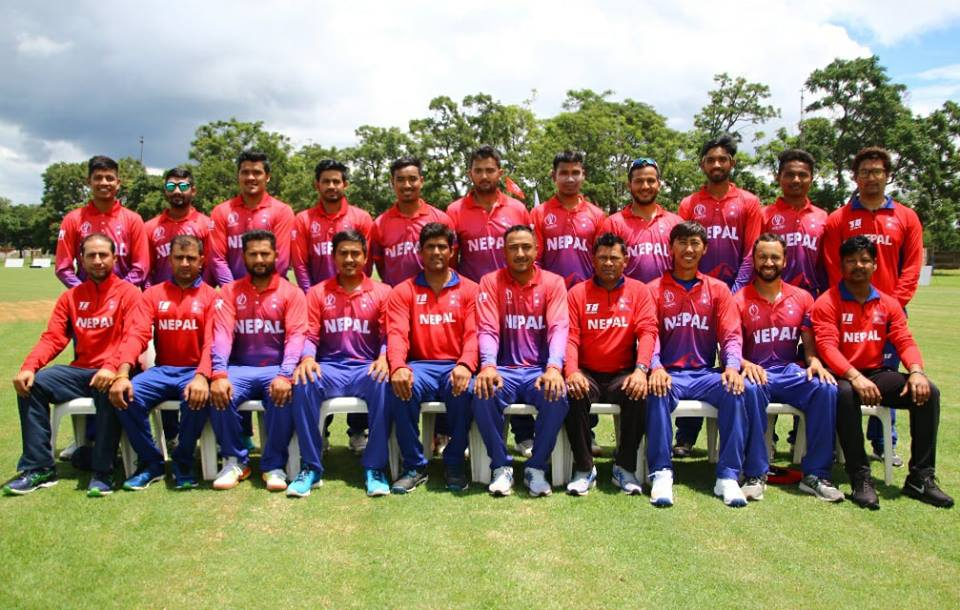

ALL NEPAL FOOTBALL ASSOCIATION

Captain and Batsman Gyanendra Malla 29 Right-handed Right-arm off break Province No 3 A ODI, T20I 11 Vice Captain and All-rounder Dipendra Singh Airee 19 Right-handed Right-arm medium, Right-arm off break Nepal Police Club A ODI, T20I 45 Batsmen Sharad Vesawkar 31 Right-handed Right-arm off break Armed Police Force Club A ODI, T20I 5 Aarif Sheikh 22 Right-handed Right-arm medium Nepal Police Club B ODI, T20I 24 Rohit Paudel 17 Right-handed Right-arm medium-fast Armed Police Force Club B ODI, T20I 17 Sundeep Jora 18 Right-handed Right-arm medium Armed Police Force Club ODI, T20I 21 Ishan Pandey 21 Left-handed Province No. 3 T20I 2 Wicket-keepers Dilip Nath 21 Left-handed Sagarmatha Legends C ODI, T20I 4 Binod Bhandari 29 Right-handed Tribhuwan Army Club ODI, T20I All-rounders Paras Khadka 32 Right-handed Right-arm medium-fast, Right-arm off break Province No. 3 A ODI, T20I 77 Karan KC 28 Right-handed Right-arm fast Armed Police Force Club B ODI, T20I 33 Sompal Kami 23 Right-handed Right-arm fast-medium Tribhuwan Army Club A ODI, T20I 10 Pawan Sarraf 19 Right-handed Right-arm off break Armed Police Force Club ODI, T20I 22 Kushal Malla 15 Left-handed Left-arm orthodox spin Tribhuwan Army Club T20I 5 Pace Bowlers Avinash Bohara 22 Right-handed Right-arm medium Armed Police Force Club T20I 3 Spin Bowlers Basanta Regmi 33 Right handed Left-arm orthodox spin Armed Police Force Club A ODI, T20I 9 Sandeep Lamichhane 19 Right handed Leg break googly A ODI, T20I 25 Lalit Rajbanshi 20 Right handed Left-arm orthodox spin Nepal Police Club B ODI, T20I 27 Sushan Bhari
